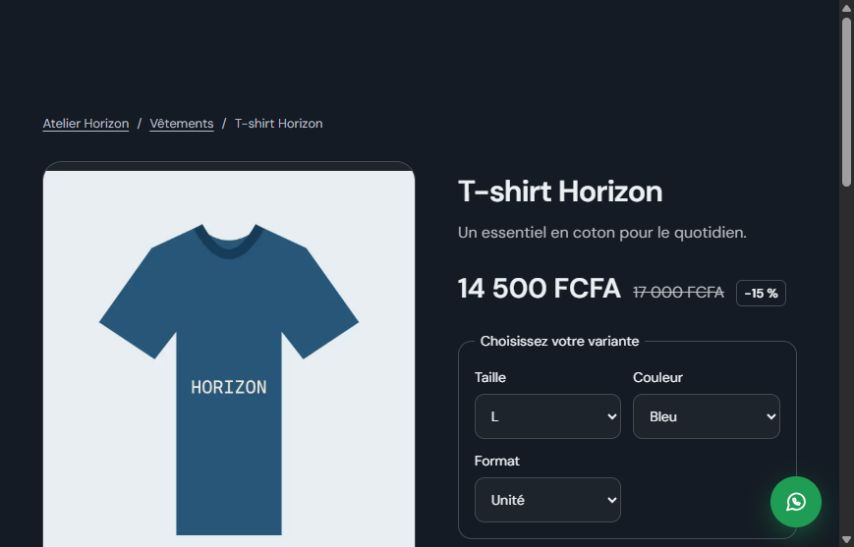
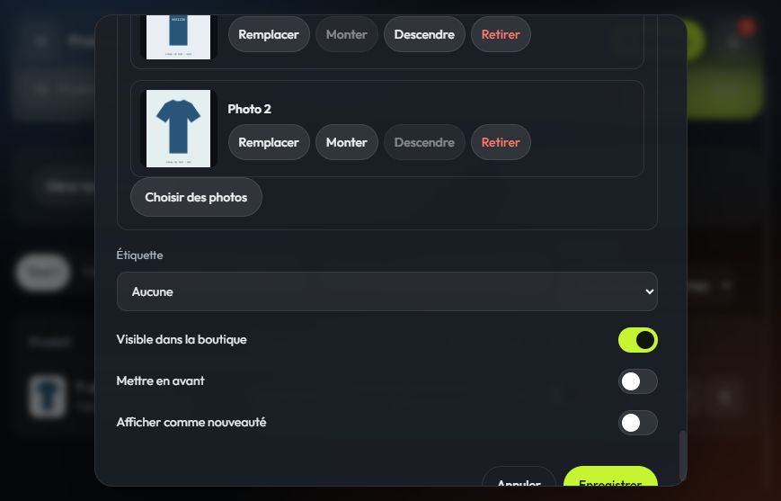
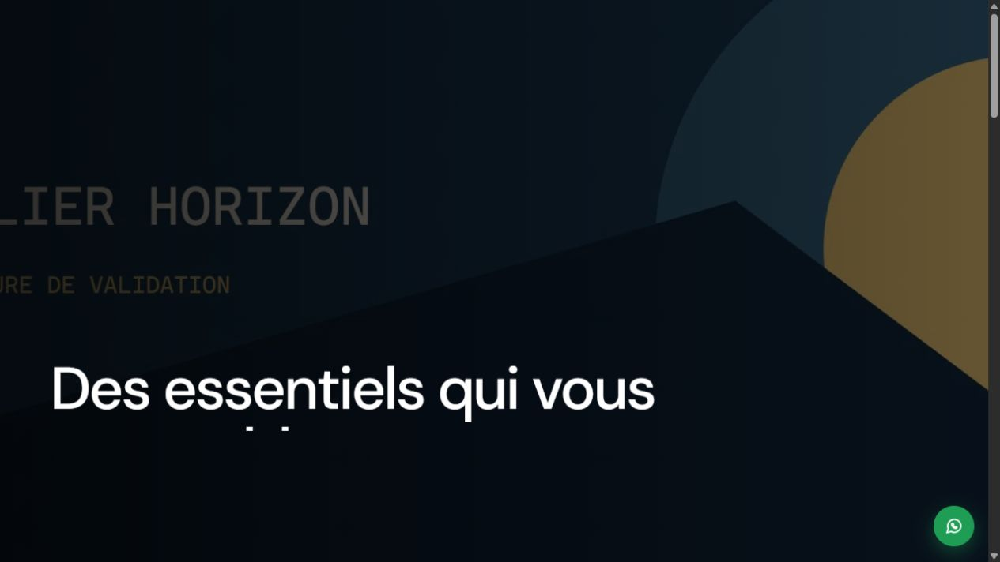
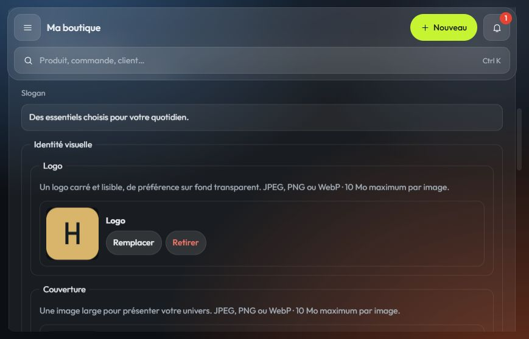
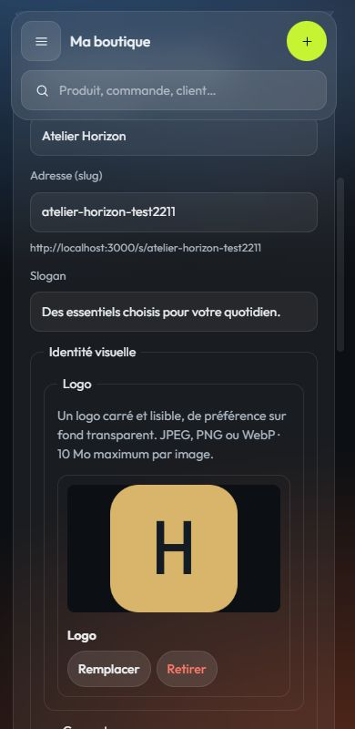

Validation du 22 novembre 2026 · Branche feature/images-locales-lot-4.
Les produits, le logo et la couverture disposent d’un sélecteur natif de fichiers avec aperçu. La galerie produit accepte plusieurs photos à la fois, conserve son ordre et propose le remplacement et le retrait. Les anciennes images HTTPS restent compatibles. L’association prend effet après l’enregistrement du formulaire.
Les fichiers sont enregistrés dans .local/uploads sur l’ordinateur du serveur et leurs références dans PostgreSQL. JPEG, PNG et WebP fixes sont acceptés, à hauteur de 10 Mo et 40 mégapixels par fichier. Les images sont orientées correctement, limitées à 2 400 pixels par côté, réencodées en WebP et privées de métadonnées. L’API vérifie la session, l’origine et l’appartenance des images à la boutique.
Une sauvegarde PostgreSQL et un instantané privé ont été créés avant la migration 006 dans .local/backups/images-lot4-2026-11-22. La comparaison après migration et après les tests confirme la conservation de tous les champs et de toutes les lignes initiales : 8 produits, leurs prix et stocks, les 4 catégories initiales, 1 client, 1 commande et sa ligne, l’identité visuelle et les événements existants. Aucun produit de Yanshop n’a été transformé ou illustré par les tests. Une catégorie supplémentaire et une visite apparues pendant le travail sont conservées également.
Contrôle détaillé de conservation.
| Contrôle | Résultat |
|---|---|
| Suite automatisée isolée | 62 tests réussis, aucun échec |
| Images sur PostgreSQL natif | 8 tests réussis |
| Régression variantes sur PostgreSQL natif | 8 tests réussis |
| Compilations | Front et dashboard réussis |
| Migrations | 006 appliquée sur aurelia_db ; seconde exécution sans modification |
| Navigateur | Sélecteur ouvert, sélection multiple confirmée, import de deux formats, remplacement, ordre et retrait, sauvegarde et réouverture, logo et couverture, erreur sur un faux PNG et affichage public vérifiés |
| Responsive | Réglages d’images vérifiés à 390 et 320 pixels sans débordement horizontal |
Les tests automatisés vérifient aussi la transparence, l’orientation EXIF, le retrait des métadonnées, les fichiers SVG et faux fichiers refusés, la limite de 10 Mo, les accès croisés et chemins arbitraires refusés, l’isolation RLS, le redémarrage du serveur et le maintien des anciens liens après retrait.
Les essais visuels ont été effectués dans la boutique distincte Atelier Horizon, avec des illustrations explicitement créées pour la validation. Aucun message WhatsApp n’a été envoyé.





Les images sont publiques dès l’import. Le retrait d’une association ne supprime pas le fichier, et les imports abandonnés restent conservés. Il faut sauvegarder la base et le dossier d’images ensemble. Le fournisseur de stockage n’est pas encore configuré ; les étapes de transfert et les limites sont décrites dans le guide des images.